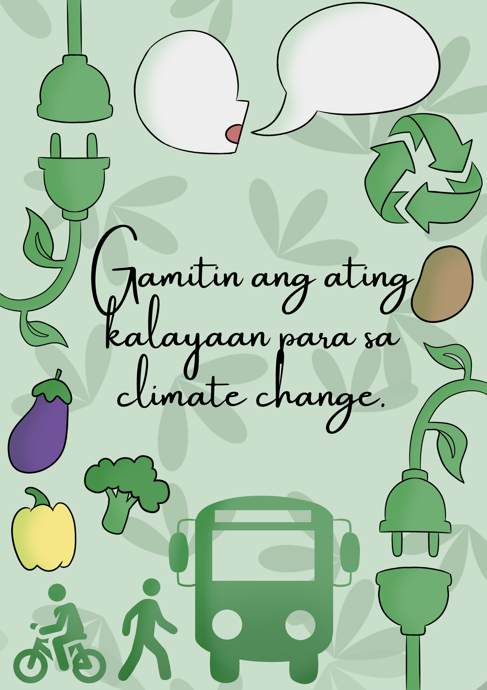

"Kilos na tumutugon sa paggamit ng kalayaan na maiuugnay sa kapaligiran o climate change"
ni Kirstine Alfaro
"Gamitin natin nang wasto ang ating kalayaan para sa ating kapaligiran. Pwede ito makamit sa pamamagitan ng pagsasalita ukol sa Climate Change, Pagtitipid ng enerhiya sa bahay, Paglalakad, Pagbibisikleta o pagsakay na lamang sa pampublikong sasakyan, Pagkain ng mas maraming gulay, at ugaling gawin ang 3Rs o ang (Reduce, Reuse, Repair and Recycle)."
"Batay sa video na aming napanood, noong 2016 to 2019, ang ating mundo ay nakaranas ng pinakamatinding heat waves, wildfires o pagkasunog ng gubat, at iba pang kalamidad na maaaring makasira ang ating inang kalikasan. Ang bilang ng mga kalamidad na nangyari dito sa ating mundo ay tumataas sa nakalipas na 40 taon at batay sa mga eksperto ang pagtaas na ito ay maaari pang magpatuloy. Sa kabilang dako, may mga solusyon rin naman na ginagawa tayong mga tao upang maibsan ang pagbabago ng klima tulad ng underwater farming at paghahanap mga ng bagong pagkukunan ng enerhiya o mga bagong pagkukunan ng renewable energy. Ipinakita rin sa aming napanood ang pagkakaiba ng “weather” at ng “climate change” at kung paano nila ito hinuhulaan batay sa mga datos na kanilang nakalap at kung ano ang mga ipinapahiwatig ng mga datos na ito. Batay din sa aming napanood, ang mga ginagawa natin bilang tao na makasisira sa ating kalikasan tulad ng pagtatapon ng basura kung saan-saan, pagsusunog ng plastic, at pagpuputol ng mga puno ay isa sa mga dahilan kung bakit mas mabilis ang pagbabago ng ating klima. Kung ipagpapatuloy natin ang mga gawaing ito, maaaring masira ang ating inang kalikasan; at mayroong malaking posibilidad na mas malala pa ang mga mangyayari sa ating mundo sa mga susunod pang mga taon. Maraming tayong mga solusyong pwedeng gawin; kinakailangan lang nating magkaisa at magsama-samang tumulong upang ating mapangalagaan at maprotektahan ang ating kalikasan at ang ating klima sa mga dekada at siglong pang darating.